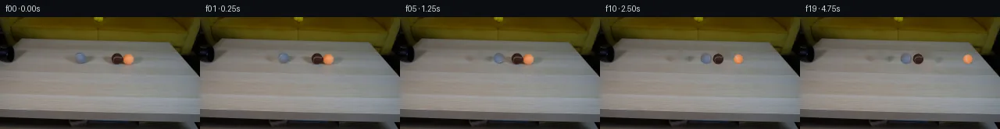

![首帧]()

Round 00
2026-11-04T20:51:47.587010+00:00像素候选变化代码 +225/−0inspection 更新
pixels 832baad166163a00 · code 767ea5389a32f8ed
查看本轮 generate.py 真实 diff
--- previous/generate.py +++ current/generate.py @@ -0,0 +1,225 @@ +#!/usr/bin/env python3 +"""Generate the 20-frame locked-camera tennis-ball collision sequence.""" + +from pathlib import Path + +import cv2 +import numpy as np +from PIL import Image, ImageDraw + +import artifact_io + + +ROOT = Path(__file__).resolve().parent +H, W = 144, 256 + + +def smoothstep(edge0, edge1, x): + u = np.clip((x - edge0) / (edge1 - edge0), 0.0, 1.0) + return u * u * (3.0 - 2.0 * u) + + +def ellipse_mask(cx, cy, rx, ry): + """Antialiased full-frame ellipse alpha mask.""" + yy, xx = np.mgrid[0:H, 0:W].astype(np.float32) + d = np.sqrt(((xx - cx) / rx) ** 2 + ((yy - cy) / ry) ** 2) + return 1.0 - smoothstep(0.86, 1.04, d) + + +def make_clean_plate(source, which): + """Inpaint only the photographed ball/shadow footprints requested.""" + mask = np.zeros((H, W), np.uint8) + if "gray" in which: + cv2.ellipse(mask, (102, 54), (11, 11), 0, 0, 360, 255, -1) + if "pair" in which: + # One connected footprint avoids a narrow unfillable strip between balls. + cv2.ellipse(mask, (157, 54), (19, 12), 0, 0, 360, 255, -1) + return cv2.inpaint(source, mask, 4, cv2.INPAINT_TELEA) + + +def add_shadow(frame, cx, cy, radius, strength=0.24): + """Multiply in a soft, compact table-contact shadow.""" + yy, xx = np.mgrid[0:H, 0:W].astype(np.float32) + # Lighting in the source places the darkest contact just down/right. + sx, sy = cx + 1.8, cy + radius * 0.68 + dx = (xx - sx) / (radius * 0.92) + dy = (yy - sy) / (radius * 0.34) + alpha = strength * np.exp(-2.15 * (dx * dx + dy * dy)) + alpha *= (np.sqrt(dx * dx + dy * dy) < 1.75) + out = frame.astype(np.float32) * (1.0 - alpha[..., None]) + return np.clip(out, 0, 255).astype(np.uint8) + + +def composite_ball(frame, source, source_center, target_center, radius, angle_deg): + """Remap a photographed ball around its center, then alpha-composite it.""" + scx, scy = source_center + tcx, tcy = target_center + pad = int(np.ceil(radius + 2.0)) + x0 = max(0, int(np.floor(tcx)) - pad) + x1 = min(W, int(np.floor(tcx)) + pad + 1) + y0 = max(0, int(np.floor(tcy)) - pad) + y1 = min(H, int(np.floor(tcy)) + pad + 1) + + yy, xx = np.mgrid[y0:y1, x0:x1].astype(np.float32) + ox, oy = xx - tcx, yy - tcy + theta = np.deg2rad(-angle_deg) + cs, sn = np.cos(theta), np.sin(theta) + map_x = (scx + cs * ox - sn * oy).astype(np.float32) + map_y = (scy + sn * ox + cs * oy).astype(np.float32) + sampled = cv2.remap( + source, + map_x, + map_y, + interpolation=cv2.INTER_CUBIC, + borderMode=cv2.BORDER_REFLECT_101, + ).astype(np.float32) + + distance = np.sqrt(ox * ox + oy * oy) + alpha = 1.0 - smoothstep(radius - 0.75, radius + 0.35, distance) + # A tiny irregularity retains the photographed fuzzy tennis-ball silhouette. + polar = np.arctan2(oy, ox) + irregular = 0.10 * np.sin(7.0 * polar + np.deg2rad(angle_deg)) + alpha = 1.0 - smoothstep(radius - 0.78, radius + 0.30, distance - irregular) + crop = frame[y0:y1, x0:x1].astype(np.float32) + crop = crop * (1.0 - alpha[..., None]) + sampled * alpha[..., None] + frame[y0:y1, x0:x1] = np.clip(crop + 0.5, 0, 255).astype(np.uint8) + return frame + … diff truncated; 138 more lines …